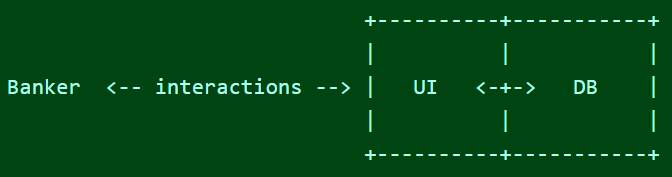
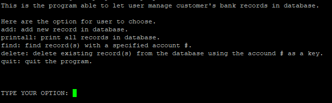

This project was compeleted and updated to C++ from me alone during fall 2022, ICS 212. This Application have user-interface that allow user to interacte with all the option they want. Once user had input all requested information in the interface, program will record and order it in descending order in the database.

In database program which will do: Add record, print all records, find record, and delete record. Here are some source code you can have a look.
addRecord: by given user account numbers, name and address. This function will list the record in the correct position and soted in descending order of account numbers printAllRecords: print out all the record that database had recorded findRecord: find record(s) with a account number deleteRecord: delete record(s) with a account number
Source code: /projects/bank-database-application/code.c
Update:
Here is a update for the project, I successed made the application with C++. In addition, database will write the record into a binary file which can pervide more security of the file. Make some improve(debugmode) from project1, kind rework deleteRecord because the code in project1 looks very mess but the work time for it was taking over time because the way how this function that I want to work. Over all for project2 is making me work harder than project1 and it should work fine.
Source code: /projects/bank-database-application/code.cpp
Summay: The program is doing perfect job for the requirements. There may have some test I didn’it include in the testplan, but I think the program will run fine even the program pass in testplan. But I think the program/project it self is not perfect (in real work field), because there are many different examples for add and delete. Because there is some limitation to do this project and is wrote by C and C++ which I have not decise what to do need with all the code I did.